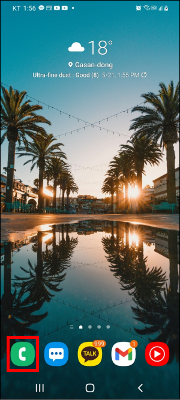
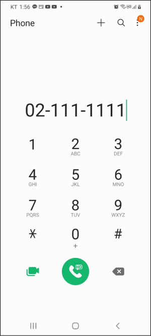
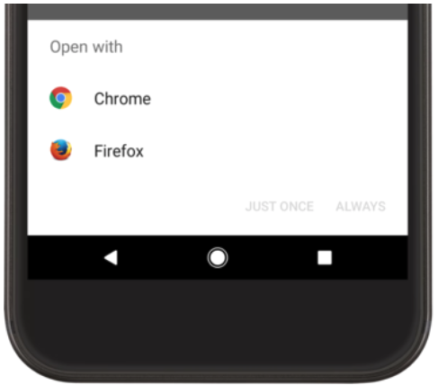
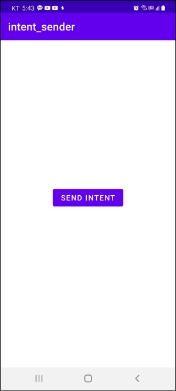
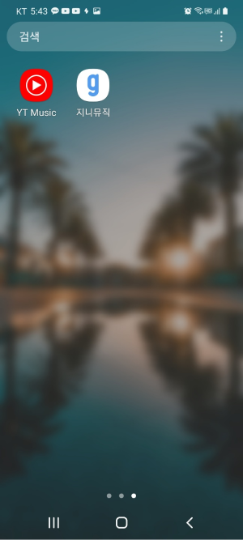
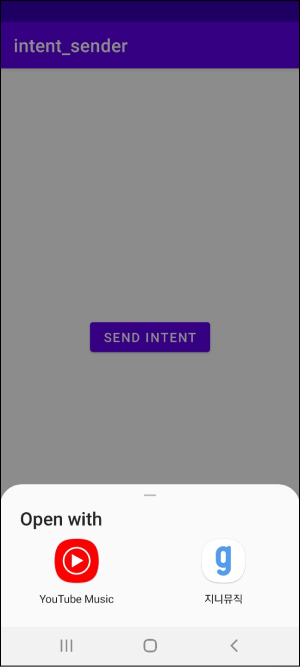

[Android] 암시적 인텐트(Implicit Intent)
암시적 인텐트
암시적 인텐트는 수행할 액션과 실행할 액티비티에 의해 처리되는 데이터 및 데이터 타입을 지정하여 다른 앱의 액티비티를 실행시킵니다. 실행할 액티비티에 의해 처리되는 데이터 및 데이터 타입은 Uri클래스를 사용하여 정의합니다.
(1) 전화 앱 예제
우선 전화번호 데이터를 처리할 수 있는 앱을 실행해보겠습니다. 아래 코드를 살펴봅시다.
1 | val intent = Intent() |
Intent.ACTION_DIAL가 액션이고 Uri.parse("tel:02-111-1111")가 실행할 액티비티에 의해 처리되는 데이터 및 데이터의 타입입니다. 안드로이드 시스템은 설치된 앱을 살펴보고 Intent.ACTION_DIAL액션과 tel:02-111-1111데이터를 처리할 수 있는 앱을 실행합니다.
위 구문은 아래와 같이 단축할 수 있습니다.
1 | val intent = Intent(Intent.ACTION_DIAL, Uri.parse("tel:02-111-1111")) |
전화 앱은 Intent.ACTION_DIAL액션과 Uri데이터을 처리할 수 있는 앱입니다.

따라서 다음과 같이 전화 앱이 실행되고, 데이터가 처리되어 화면에 출력됩니다.

(2) 웹 브라우저 앱 예제
예제를 하나 더 살펴봅시다. 웹 브라우저를 실행시키는 암시적 인텐트 예제입니다. Intent.ACTION_VIEW가 액션이고 Uri.parse("http://www.google.com")가 실행할 액티비티에 의해 처리되는 데이터 및 데이터 타입입니다.
1 | val intent = Intent(Intent.ACTION_VIEW, Uri.parse("http://www.google.com")) |
이제 앱을 실행하면 다음과 같은 대화상자가 나옵니다. 액션과 데이터를 처리할 수 있는 앱이 2개 이상인 경우 다음과 같이 대화상자가 나오게 됩니다.

인텐트를 처리할 수 있는 앱이 없는 경우 안드로이드 시스템은 ActivityNotFoundException을 발생시킵니다. 따라서 다음과 같이 예외 처리를 할 수 있습니다.
1 | try { |
(3) 오디오 플레이어 앱 예제
버튼을 누르면 오디오 플레이어 앱을 실행하는 예제입니다.

안드로이드 시스템에는 현재 두 개의 오디오 플레이어 앱이 설치되어 있습니다.
Intent.createChooser()메소드를 사용하면 오디오 플레이어를 처리할 수 있는 앱이 여러 개일 때 선택할 수 있는 대화상자를 표시할 수 있습니다.
1 | class MainActivity : AppCompatActivity() { |
이제 버튼을 누르면 다음과 같이 대화창이 나옵니다.
